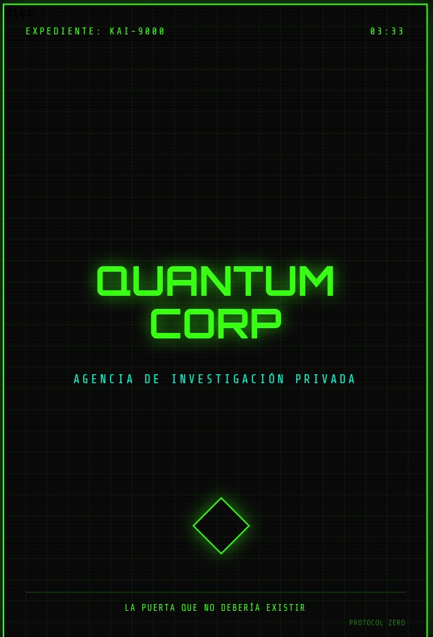
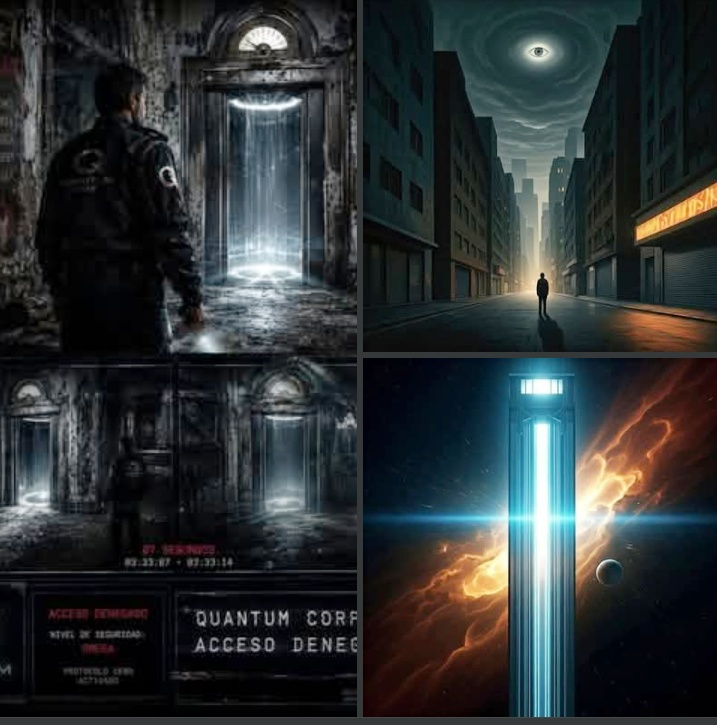

🔎 Investigación digital
Localización, análisis y organización de información pública y fuentes abiertas (OSINT).

Agencia de investigación privada · Inteligencia digital · Tecnología
INVESTIGACIÓN · ANÁLISIS · TECNOLOGÍA
Investigación de fuentes abiertas, análisis documental y herramientas de inteligencia artificial para comprender problemas reales con método, pensamiento crítico y evidencia verificable.
Explorar investigacionesNUEVA LÍNEA · CONECTIVIDAD MÓVIL
Una alternativa digital para dispositivos compatibles. Te ayudamos a revisar si tu equipo puede utilizar eSIM y qué opciones están disponibles.
Localización, análisis y organización de información pública y fuentes abiertas (OSINT).
Uso responsable de herramientas de IA para apoyar tareas de análisis, documentación y productividad.
Informes, cronologías y matrices que distinguen datos comprobados, declaraciones e hipótesis.
Divulgación y recursos para comprender riesgos digitales, privacidad y buenas prácticas.
Definimos qué se necesita saber y qué evidencia permitiría responderlo.
Consultamos fuentes públicas y registramos origen, fecha y contexto.
Contrastamos versiones, identificamos vacíos y evitamos presentar inferencias como hechos.
Entregamos resultados comprensibles, con fuentes y límites explícitos.
Kai-9000 representa la línea experimental de Quantum Corp para explorar asistencia inteligente, organización de información y automatización. La IA es una herramienta de apoyo: sus resultados requieren revisión humana y comprobación independiente.
La tecnología debe ampliar las capacidades humanas, no sustituir el criterio. Una respuesta útil no es la que confirma una sospecha: es la que resiste la revisión de sus fuentes.
Trabajamos con curiosidad, pensamiento crítico, documentación y responsabilidad. Cuando la evidencia no alcanza, lo decimos.
En el universo narrativo de Quantum Corp, el expediente fundacional se remonta a 1998 y al enigmático «Elevador Cuántico». Esta historia forma parte de la ficción institucional de la agencia y convive, claramente diferenciada, con nuestras investigaciones documentales del mundo real.

Para consultas sobre eSIM, investigación digital o propuestas de colaboración, utiliza el formulario. No envíes contraseñas, datos financieros, documentos de identidad ni información personal sensible.
Al enviar el formulario, la información se transmite a Formspree para gestionar el mensaje. Consulta el aviso de privacidad antes de continuar.